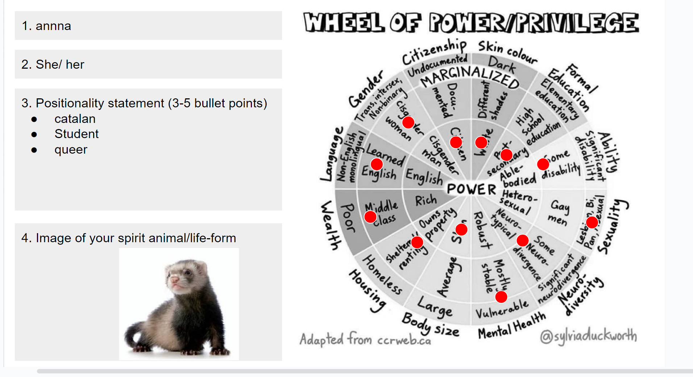
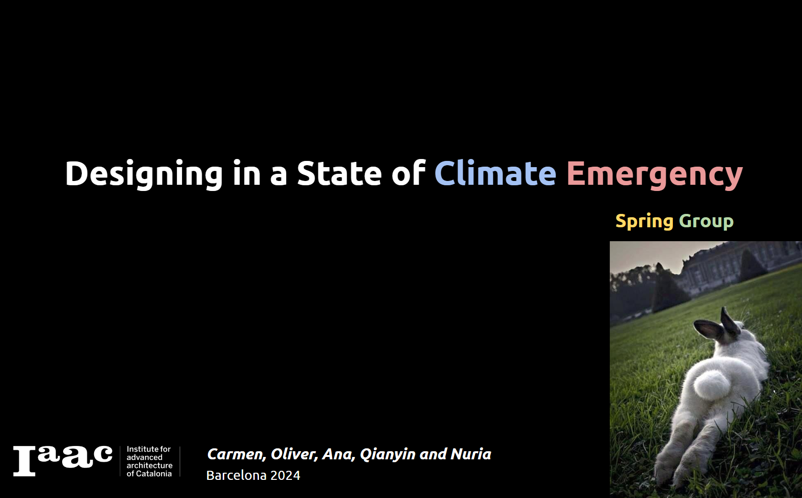
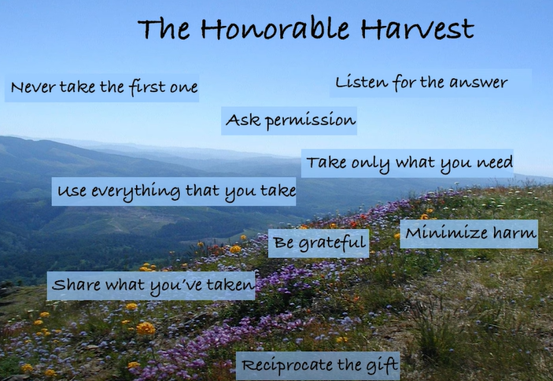

Go Back Term2

the importance of understanding one's positionality and perspective in the world.
To get post-technological: neologism, coined in 2017. Is a type of technology that is more concerned about being human than about the technology itself. Where the design goals are oriented to a conscious use of technology.
Example: Audrey Tank (digital minister of Taiwan.) Has a post-technological prayer. When we see virtual reality. Let's make it a shared reality. When we see machine learning. let's make it collaborative learning. And when we see user experience. When we're here that the singularity is near. Let us remember the plurality is here.
The changes in the climate are occurring at a rate that outpaces the natural world's and humanity's ability to adapt.
Urgency for Action: There's a pressing need for action at various scales and forms. The decisions made in the current decade are crucial for the survival of human beings. This urgency is designed to induce a level of anxiety and awareness necessary to recognize the severity of the situation
Gravity of the climate emergency and the necessity for immediate, multifaceted action
Dangerous, catastrophic New risk category: Existential
Climate emergency comunication:
What is the polycrisis: Link to Video by Adam Tooze
Why so much is going wrong at the same time? Does that make it a polycrisis? Vox Article
"So the big question is: What happens when we have billions of humans right? Like billions of humans are using a AI, I'm narrowing down a bit about narrowing down to the notion of a digital economy. But today the digital economy is quite, a very weaving into the general economy. So what happens when billions of humans spend billions of seconds using billions of smartphones, concentrating money and power in the hands of a few billionaires who run corporations that manufacture billions of devices made of rare minerals that are used to extract and process billions of data points that are stored in thousands of data centers that consume billions of kilowatt hours of electricity, generating billions of tons of carbon emissions."
System change, not climate change.
Global warming, the most critical aspect of climate emergency, we need to understand it as the consequence of social injustice. The idea of extractivism: We need to understand that there is a deep link with social inequality that is rooted in the economic model of capitalism. They have been directly and indirectly attacking these peoples, their cultures, territories, bodies.
Our relationship with change
Everything: It's both a physical, a living body, cosmic body. From this position of being, we are the planet rather than we are in the planet. Are we the planet or are we in the planet?
Humanity is experiencing a deep crisis of imagination: sociological imagination.
Read more about Solar-Centered Designing
We are now completely dictated by chronological time. We are ignoring solar rhythms. Abstractions like chronological time. If we think of the clock, the calendar, the smartphone, which is not a smart and is not a phone.
The idea of the digital. The user. The cloud. The internet. A nation's money. A market. The economy. The world. And the end of the world. These are all abstractions.
The use of euphemistic terms like 'climate change' instead of 'climate emergency' is misleading. We don't have fever; we have a disease, a virus.
AI as artificial (made by human) or intelligent (learning and decision-making capacity)?
Narratives have been colonizing our collective imagination. AI is fundamental to the existence of human civilization.
It is easier to imagine the end of the world than to imagine the end of capitalism.
"When guys like Elon Musk try to imagine super intelligence, what they are really referring to is the idea of unlimited capitalism."
Words can shape worlds, or they shape worlds. These stories sometimes are about what is possible. We can think of stories about possible worlds, understanding the idea of futures as stories about possible worlds, desirable or undesirable.
A very popular story is money. Another very popular story is the idea of nations and countries: these are metaphors for abstractions. The narratives around them end up shaping our behavior.
To think of ways that we can use words to create stories as designers, to reimagine worlds, to rebuild worlds, and which is a concept.
Read more about the real danger to civilization
This is the key driver of the sociological imagination crisis. In the case of AI, multiple definitions start referring to common themes.
Making a categorization.
No hay un consenso sobre la idea de qué es inteligencia.
Essentially, the definition of artificial intelligence.
We don't think, for example, of Google Maps as an AI tool. But behind Google Maps, there are several AI systems.
AI is presented as something that is the human and the machine, or that is visually represented as a humanoid robot. The idea of this is a human, and it started to sit in the imagination of these people. The whole notion of a robot, the whole notion of the human or the binary of the human and the machine.
A Declaration of Independence of Cyberspace - John Perry
How metaphors shape our understanding of technology.
We are moving fast, breaking things, and prioritizing innovation and disruption without considering their costs and impacts.
La innovación tiene un coste.
Ancillary Design: We need to view ourselves as part of a larger ecology rather than as masters of our surroundings. Be part of the earth. Rethinking the relationship with nature and recognizing the interdependencies. Economic decisions should be made within an ecological framework, not solely an economic one. This shift in perspective is essential for addressing the climate emergency.
5 Keys for Design:
Because we believe that the idea of humans saving the planet is wrong, we should care about.
We are not the savers of the planet.
Social metabolism by Marx: interconnectedness of human and non-human elements. It's thinking of everything in terms of a process and a metabolism. Do you know where your waste goes?
What we drink, what we eat, there is displacement. The toilet is one example. Another example is the electric car. Pollution is just being displaced.
3 Key Takeaways:
Link to the Spring Presentation
Interconnectedness of time and space. Consideration of location in the broader context of the planet, solar system, and galaxy. Understanding our position in these larger scales provides insights into our relationship with time.
Zimbardo's Time Orientation Model:
Importance of Gratitude: Gratitude is crucial for acknowledging and appreciating achievements, learning from past experiences, and letting go to move forward, especially in dealing with global challenges like climate change and social unrest.
Temporality is the state of existence in time, encompassing how we live our lives, how societies are born, evolve, and perish, and how we handle life and death. It's about understanding life within the broader context of time.
We are experiencing a temporal crisis, living in a hyper-present state without clear long-term perspectives. This short-sighted view, often driven by capitalism, focuses on immediate results and neglects long-term planning.
Recognizing diverse temporalities can empower us to make more conscious decisions about our lives and the world.
The importance of considering future generations and those who came before us. Temporalists offer diverse perspectives on time, including indigenous, ecofeminist, and scientific approaches.
Explaining how ideas and trends can be categorized as:
The importance of distinguishing between the essence of a concept and its expressions, suggesting that while expressions change, the underlying essence remains constant.
Stressing the need to understand the 'why' behind actions and how this 'why' might change over time.
Staying engaged and adaptable to change.
Torus as a metaphor for understanding time. Unlike a linear model, the torus represents time as a series of interconnected paths, with the present at the center. This model allows for a cyclical understanding of time, where past experiences inform future actions and vice versa, returning to the present as a central point of reference.
Green growth: The idea of how we can reduce waste, and at the same time, the economy continues to rise and progress.
Green the economy: A different approach to traditional economic growth. Instead of focusing solely on increasing production and consumption, de-growth emphasizes reducing overall economic activity to achieve environmental sustainability. It encourages societies to prioritize well-being, social equity, and ecological balance over constant economic expansion.
Decoupling: Environmental impact.
GDP: Emphasis on GDP growth considers alternative indicators of progress.
Is green growth possible? Degrowth | The Case for Degrowth | GDP Alternatives: 7 Ways to Measure a Country’s Wealth
Jevons paradox: Learn more
The need to redesign the economic system is evident today. In the current system, a lack of growth leads to crises and the risk of falling into poverty.
The reduction of working hours has been a topic that has evolved over time in response to changing social and economic conditions. Previously, in some historical periods, extremely long working hours were common, such as the mentioned 16 consecutive hours.
Watch this video for more insights: The Economics of Degrowth

I have a strong connection with the approach of this seminar. Belonging to a scout group where we often work on and discuss nature-related topics, such as working towards its improvement, has made me feel very identified with the discourse and the viewpoints that have been discussed.